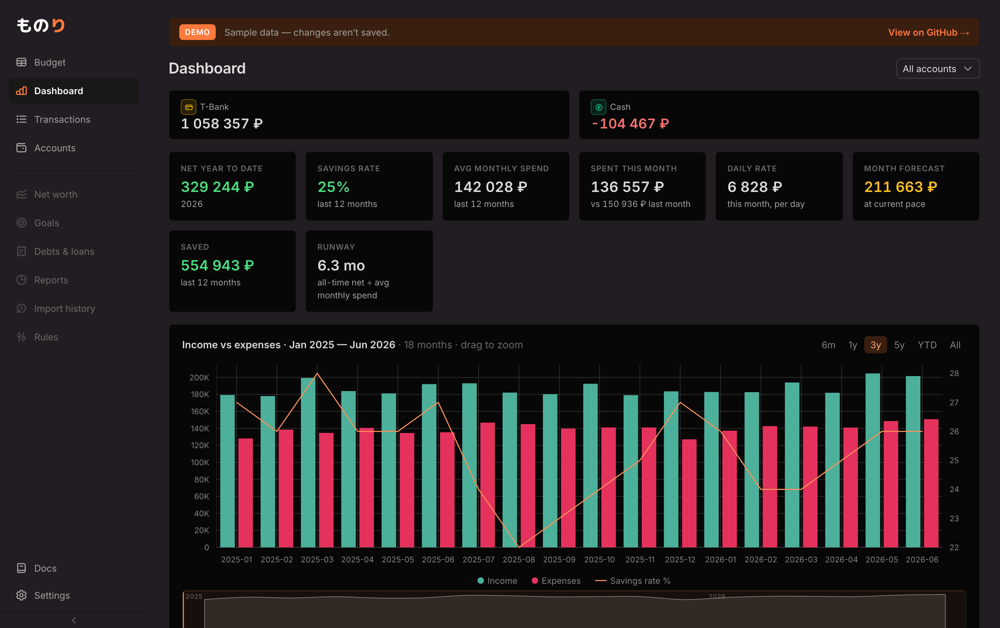
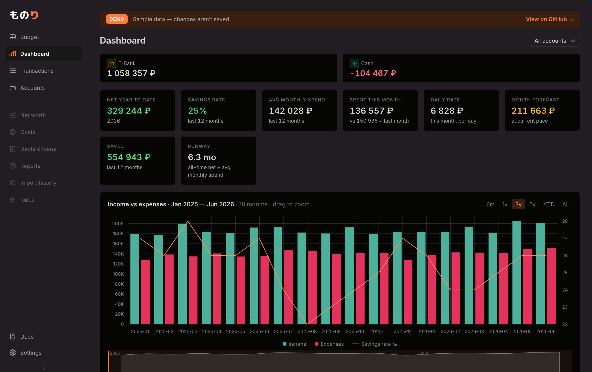

Направление по твоей идее: карточку определяет border, а заливка — это фон,
слегка затемнённый (не светлее, а на тон темнее фона). Никакого «приподнятого
блока» — только аккуратная рамка и лёгкая посадка вглубь. Отличаются только сила рамки и
глубина затемнения. Реальный дашборд /demo. Выбери — применю в theme.css.

